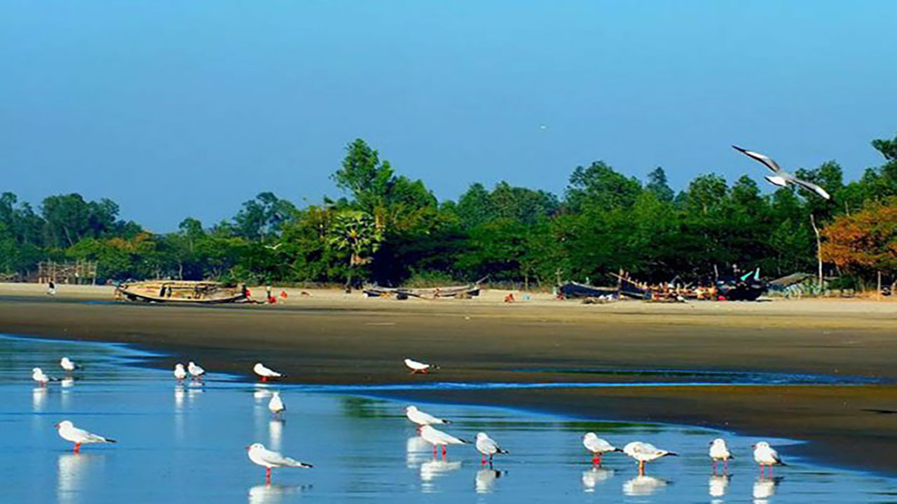
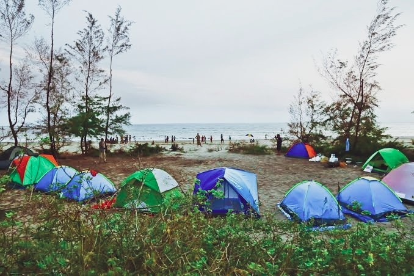
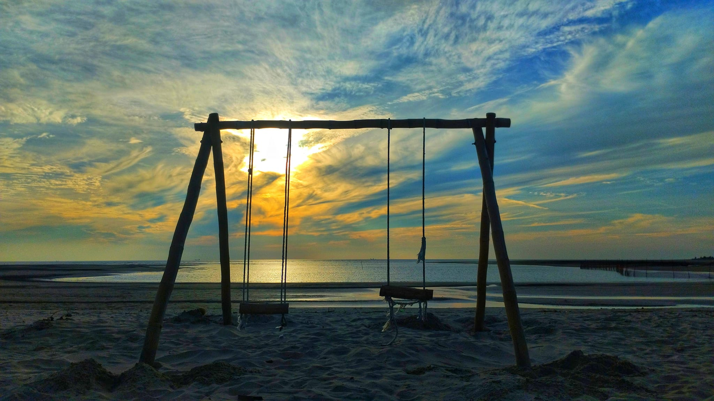
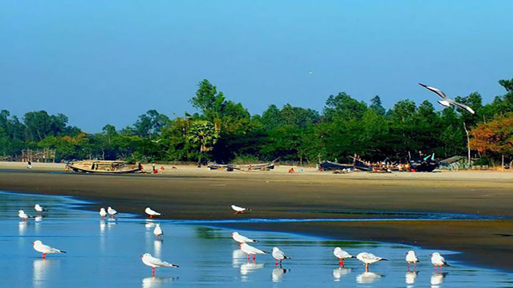
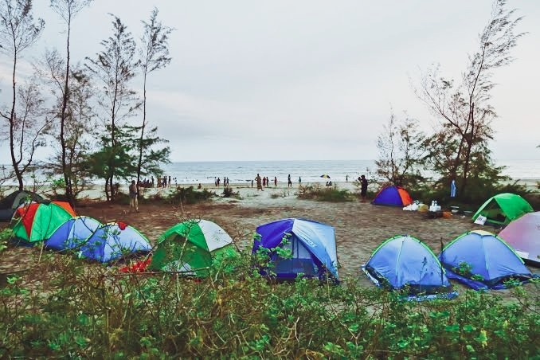
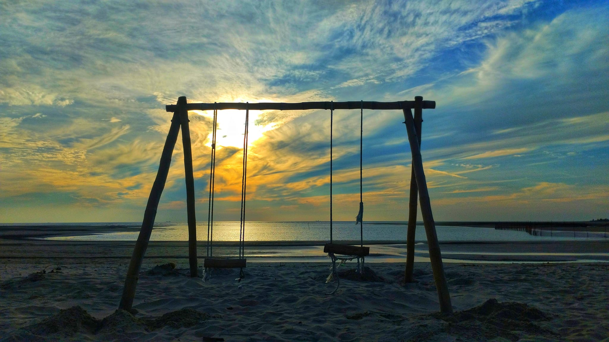

What Is Sonadia ?
Sonadia is a small island located in the southeastern part of Bangladesh, near the coastal town of Cox's Bazar. It is known for its natural beauty, rich biodiversity, and ecological significance.
Geography and Ecology
- Sonadia spans about 9 square kilometers and is situated in the Bay of Bengal
- The island features sandy beaches, mudflats, and mangrove forests, making it an important ecological area.
- It serves as a key habitat for various marine species, including sea turtles, crabs, and fishes.
Wildlife and Conservation
- The island is a significant location for migratory birds, hosting species such as pied avocets, gulls, and plovers during the winter
- It has been identified as an area of ecological importance, and there are ongoing discussions about its preservation and sustainable use.
Development and Controversies
- There have been proposals to develop Sonadia Island into a deep-sea port. However, these plans have raised environmental concerns due to the potential impact on its delicate ecosystem
Tourism
- Although it is not a mainstream tourist destination, the island's serene beaches and natural beauty attract eco-tourists and researchers interested in marine biodiversity and conservation efforts.
Images Of Sonadia


.jpg)
.jpg) 





.jpg)
.jpg)
.jpg)
.jpg)
.jpg)
.jpg)
.jpg)
.jpg)